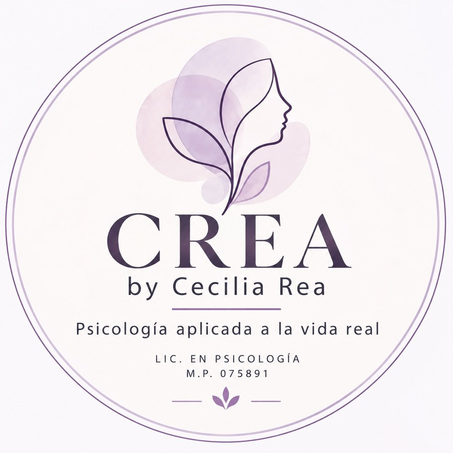
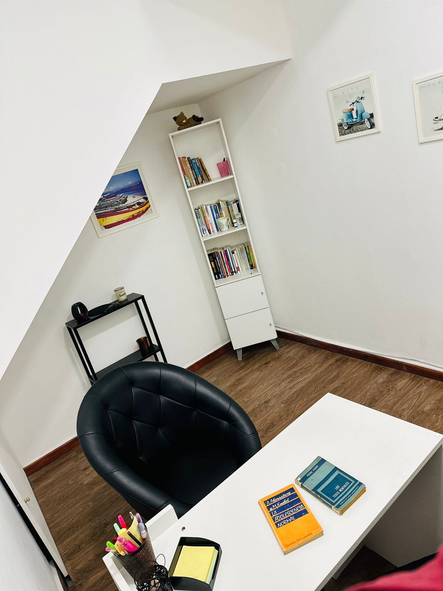
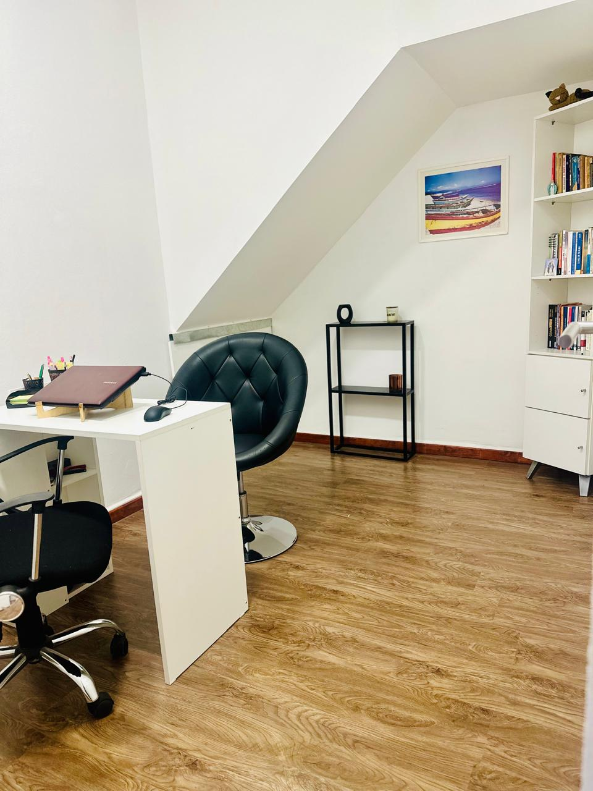

Psicoterapia para adultos
A veces sabemos qué nos pasa, pero no encontramos cómo resolverlo. Un espacio para hablar de lo que nos preocupa y comprenderlo mejor.
Psicología aplicada a la vida real.
En CREA encontrarás un espacio de escucha y acompañamiento psicológico, donde puedas hablar de lo que te sucede, comprender tus emociones y trabajar sobre aquello que hoy te genera malestar o simplemente sentís que necesitás revisar.

El objetivo de la terapia no es cambiar al paciente, sino ayudarlo a descubrir quién es realmente.
La verdadera libertad es entender que no siempre controlamos lo que sentimos, pero sí cómo lo vivimos.

Soy Licenciada en Psicología, Especialista en Clínica y Tratamiento, con formación en Evaluación y Diagnóstico Psicológico, Psicoanálisis y Terapia Cognitivo-Conductual. También cuento con formación en Neuropsicología Clínica.
Además, soy Licenciada en Relaciones Laborales y Magíster Internacional en Dirección de Recursos Humanos, formación que complementa mi mirada sobre los vínculos, las relaciones interpersonales y el bienestar en los distintos ámbitos de la vida.
Mi trabajo clínico parte de un enfoque integrador, que articula aportes del Psicoanálisis y la Terapia Cognitivo-Conductual, adaptando las intervenciones a las necesidades y particularidades de cada persona.
Entiendo la psicoterapia como un espacio de escucha, reflexión y trabajo conjunto. No se trata únicamente de abordar aquello que genera malestar, sino también de poder conocerse, comprender las propias experiencias, revisar formas de vincularse y construir nuevas maneras de afrontar distintas situaciones de la vida.
Reservar turnoUn espacio para cada etapa y cada situación. Elegí el que se parece más a lo que estás buscando y conocé más.
A veces sabemos qué nos pasa, pero no encontramos cómo resolverlo. Un espacio para hablar de lo que nos preocupa y comprenderlo mejor.
Un espacio propio, de escucha y confianza, para hablar de lo que sucede, comprender las emociones y encontrar nuevas formas de afrontar las dificultades.
A través del juego, la palabra y diferentes recursos terapéuticos, acompañamos la comprensión y expresión de las emociones.
Para adultos responsables que buscan comprender conductas, acompañar las emociones de sus hijos y encontrar nuevas herramientas.
Un espacio para expresarse, escuchar al otro y comprender qué está sucediendo en la relación y qué posibilidades de cambio existen.
Recorridos escritos para hacer a tu ritmo, disponibles en Hotmart. Son materiales de reflexión y no reemplazan un proceso psicoterapéutico.
Taller autoguiado para explorar la culpa, el miedo al conflicto, la necesidad de agradar y la dificultad para reconocer las propias necesidades.
Ver en HotmartTaller autoguiado para explorar las expectativas, los vínculos, las pérdidas y aquello que puede hacer difícil dejar ir.
Ver en HotmartTaller autoguiado para explorar la mirada ajena, la aprobación, la autoestima y las decisiones condicionadas por la opinión de los demás.
Ver en HotmartKit práctico para psicólogos que están comenzando a atender adultos: manual, casos desarrollados, fichas y guía rápida de uso.
Ver en HotmartPodés reservar directamente en los horarios disponibles de la agenda online.


Las sesiones individuales duran de 45 a 50 minutos.
Se solicita avisar con al menos 24 horas de anticipación.
Reservá tu turno en la agenda online, escribime por WhatsApp si querés hacer una consulta antes, o dejame un mensaje en el formulario.
Este formulario no es para urgencias. Si vos o alguien cercano está en riesgo, llamá al 135 (Centro de Asistencia al Suicida, gratuito desde CABA y Gran Buenos Aires) o al 107 (emergencias médicas).